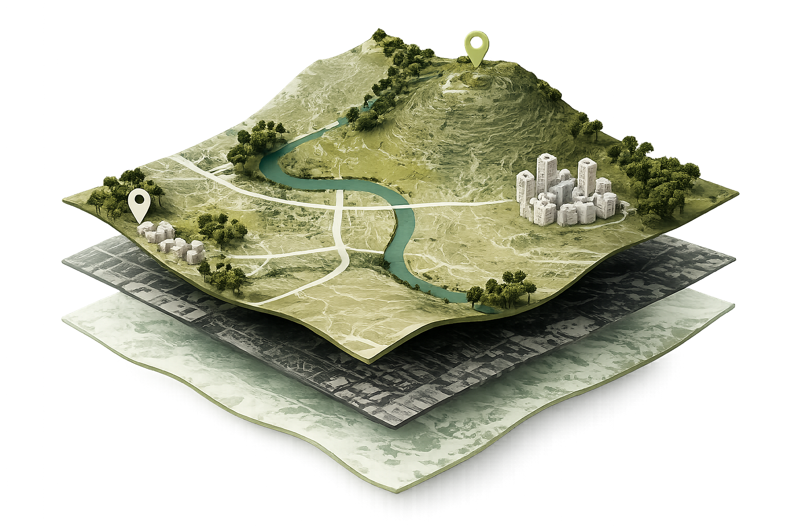
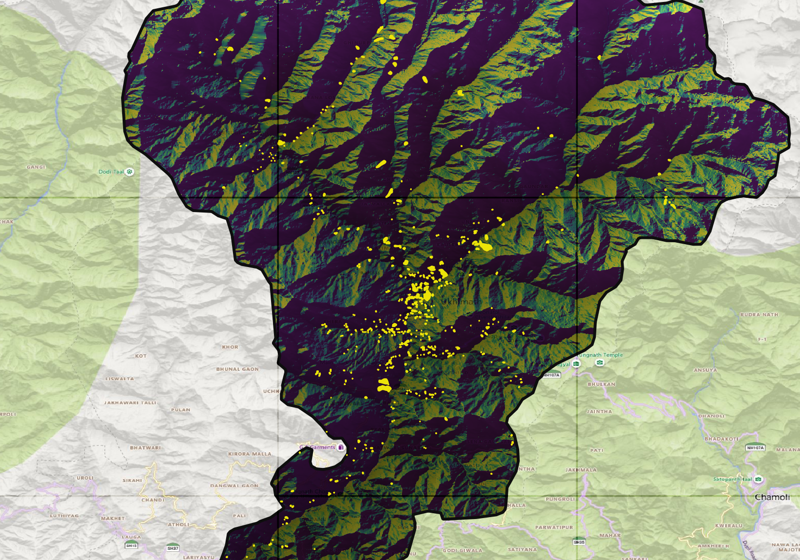
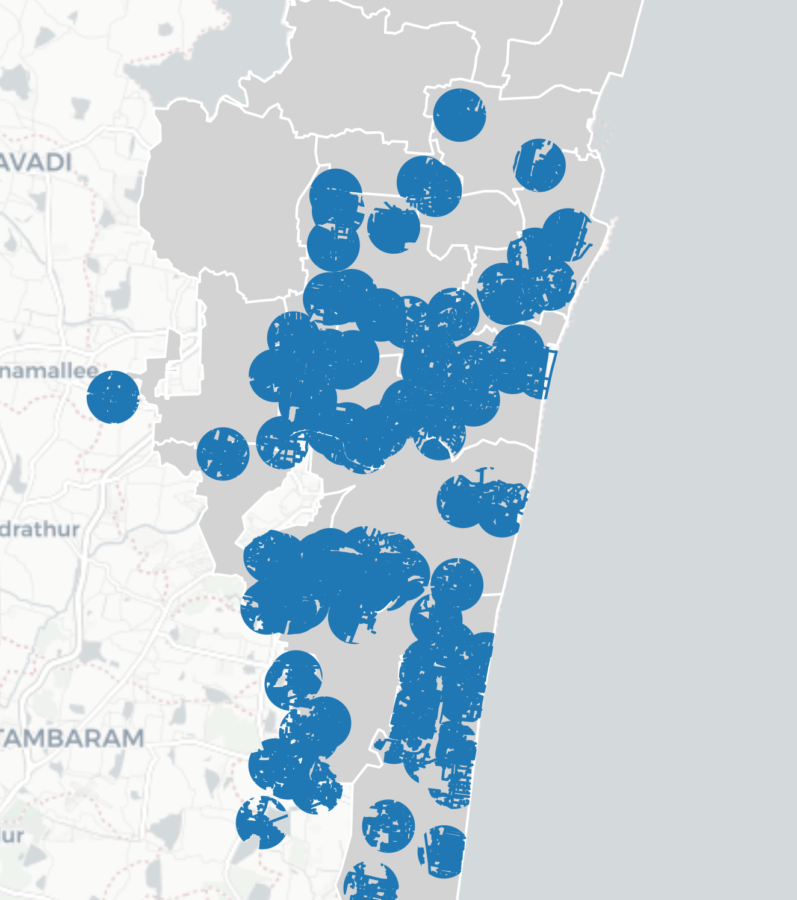
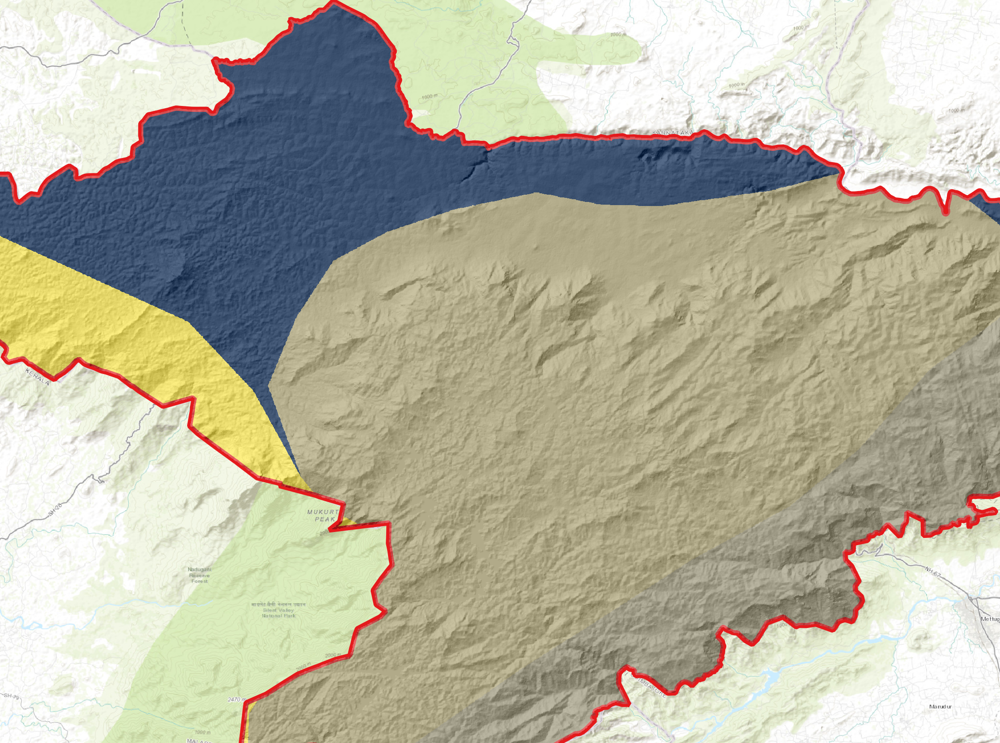
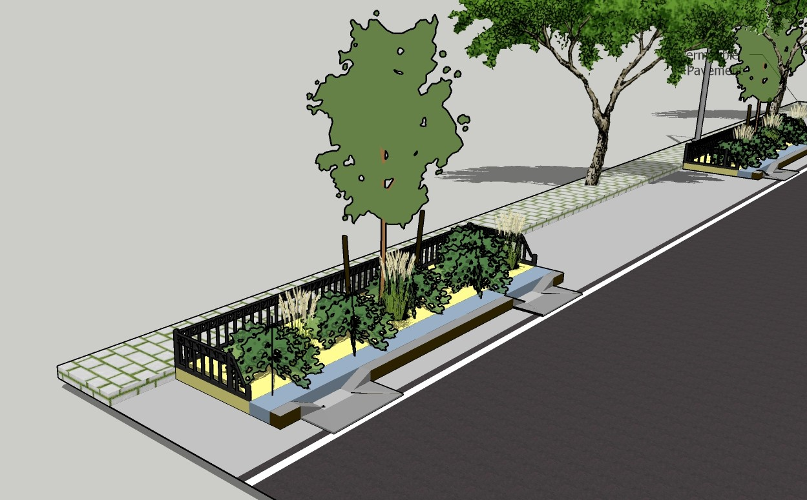

Geospatial Analyst
Hi I'm Kushi, an Urban planning graduate specializing in GIS, Remote Sensing, Spatial analysis, and Geospatial development using Python, PostGIS, and Web GIS.

B.Tech (Urban Planning)
I am a Geospatial Analyst with a background in Urban and Regional Planning, passionate about transforming spatial data into meaningful insights and real-world solutions. My experience spans GIS analysis, remote sensing, spatial databases, and geospatial development, with hands-on involvement in urban planning and large-scale mapping projects.
I have worked on projects involving land parcel mapping, feature extraction from satellite imagery, route optimization, and master plan development. Through these experiences, I developed strong skills in spatial analysis, data validation, georeferencing, and workflow automation using GIS technologies.
My technical expertise includes Python, SQL, PostgreSQL/PostGIS, QGIS, GeoServer, and Web GIS concepts. I enjoy building structured geospatial workflows, managing spatial datasets, and exploring modern geospatial technologies such as automation, interactive mapping, and GeoAI applications.
QGIS, ArcGIS, Spatial Mapping, Google Earth Engine
Python, JavaScript, R, SQL
PostgreSQL, PostGIS, pgAdmin
GeoServer, Leaflet, Web Mapping
Land Use Analysis, Accessibility Analysis
Spatial Analysis, Data Visualization
Built a strong foundation in urban systems, land use planning, transportation planning, and spatial analysis while exploring GIS technologies for planning workflows.
Worked on water security planning, transportation analysis, non-motorized transport projects, spatial surveys, and GIS-based urban planning workflows.
Worked on master plan updates, land use analysis, solid waste route optimization, georeferencing, and spatial data validation for urban-scale GIS projects.
Led feature extraction workflows, spatial data validation, satellite imagery interpretation, and land parcel mapping projects while managing large-scale geospatial datasets.
Currently focused on programming-based GIS, automation, spatial databases, Web GIS, and building scalable geospatial applications using Python and modern GIS technologies.

GIS-based terrain and infrastructure risk analysis for landslide-prone zones in Rudraprayag, Uttarakhand.
View Project →
GIS and Python-based accessibility assessment of healthcare, education, and recreational services across Chennai.
View Project →
GIS and Python-based modelling of annual soil loss using terrain, rainfall, soil, and land cover datasets
View Project →
Urban planning thesis focused on flood mitigation using green infrastructure strategies in Hyderabad.
View Project →